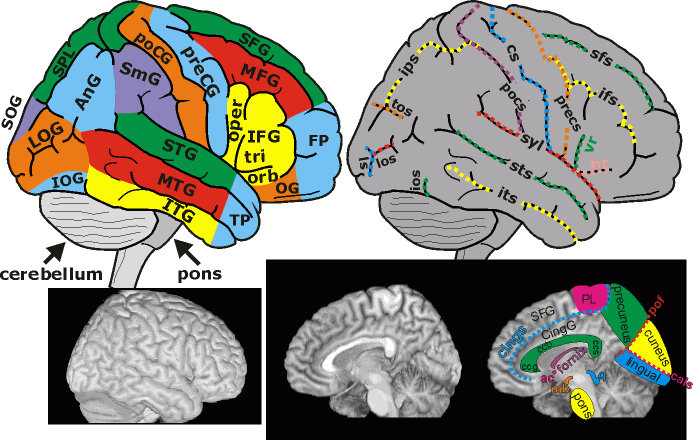

Atlas
Links
| Rendered views of the cortex | Introduction Atlas Links |
Overview
Rendered views of the cortex are often the best way to identify cortical gyri and sucli. These are often difficult to spot in single 2D slice views. Both the Duvernoy atlas and the plastinated brain are great resources for recognizing these landmarks. My free MRIcro software can create high quality renderings from MRI scans (MRIcro extracts the brain using Steve Smith's BET). My central sulcus page also gives you hints for recognizing cortical landmarks.
| Nickname: | Lateral Gyri | Nickname: | Lateral Sulci | Nickname: | Medial Landmarks | |||||
| AnG | angular gyrus | cs | central sulcus (Rolandic) | ac | anterior commissure | |||||
| cerebellum | hr | horizontal ramus | cals | calcarine sulcus | ||||||
| FP | frontal pole | ifs | inferior frontal sulcus | cings | cingulate sulcus | |||||
| IFG | inferior frontal gyrus | ios | inferior occipital sulcus | CingG | cingulate gyrus | |||||
| IOG | inferior occipital gyrus | ips | intraparietal sulcus | ccb | corpus callosum (body) | |||||
| ITG | inferior temporal gyrus | syl | lateral fissure (Sylvian) | ccg | corpus callosum (genu) | |||||
| LOG | lateral occipital gyrus | los | lateral occipital sulcus | ccs | corpus callosum (splenium) | |||||
| MFG | middle frontal gyrus | ls | lunate sulcus | cuneus | ||||||
| MTG | middle temporal gyrus | pof | parieto-occipital fissure | fornix | ||||||
| OG | orbital gyrus | pocs | postcentral sulcus | lingual | lingual gyrus | |||||
| pons | precs | precentral sulcus | mb | mamillary bodies | ||||||
| oper | pars opercularis (IFG) | sfs | superior frontal sulcus | PL | paracentral lobule | |||||
| orb | pars orbitalis (IFG) | tos | transoccipital sulcus | precuneus | ||||||
| tri | pars triangularis (IFG) | vr | vertical ramus | q | quadrigeminal plate | |||||
| poCG | postcentral gyrus | |||||||||
| preCG | precentral gyrus | |||||||||
| SFG | superior frontal gyrus | |||||||||
| SOG | superior occipital gyrus | |||||||||
| SPL | superior parietal lobe | |||||||||
| STG | superior temporal gyrus | |||||||||
| SmG | supramarginal gyrus | |||||||||
| TP | temporal pole |

Chris Rorden, 29 October 2002